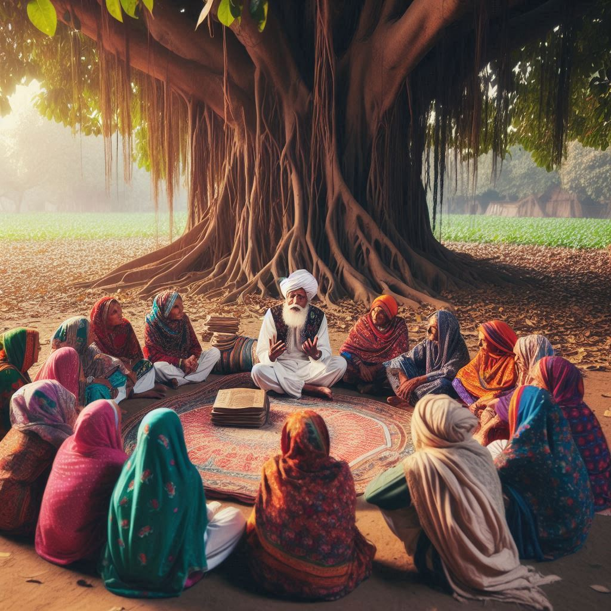
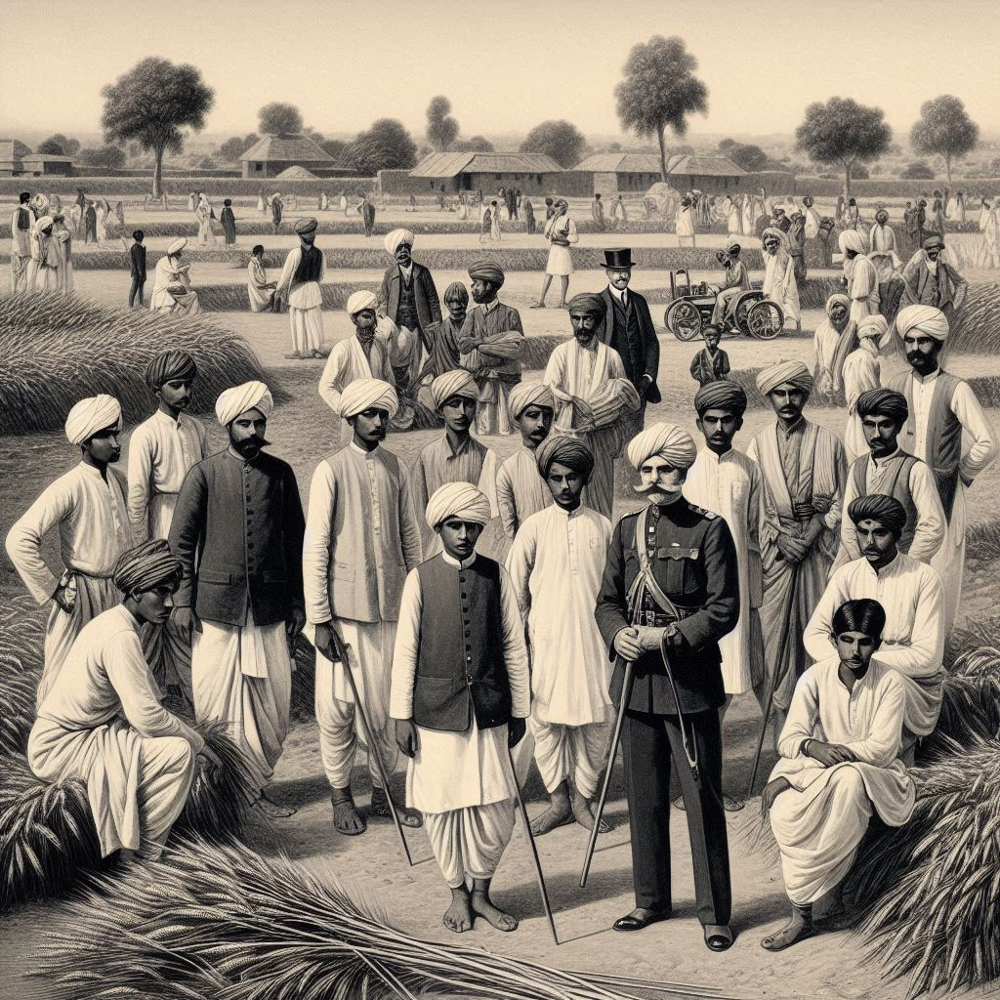

Haryana, located in the northern part of India, has a rich and diverse history that dates back to ancient
times. The state’s historical significance is closely tied to its strategic location in the region, as
well as its role in the evolution of Indian civilization.
1.Ancient History
- Indus Valley Civilization: Haryana is home to some of the earliest settlements of
the Indus Valley Civilization, one of the world's oldest urban cultures. Excavations at
sites like Rakhigarhi (considered one of the largest Harappan sites in India) have
revealed artifacts and evidence of a well-developed urban culture, with planned cities, drainage
systems, and a thriving economy based on trade, agriculture, and craftsmanship.
- Vedic Period: During the Vedic period (around 1500 BCE), Haryana was known
as the land of the Kurukshetra, a region mentioned in the Mahabharata. It
was the setting for the famous Kurukshetra War between the Pandavas and Kauravas.
The Bhagavad Gita, a key Hindu scripture, was delivered by Lord Krishna to Arjuna on the
battlefield here, marking the area as a significant center of Hindu religious thought.
- Mauryan Empire: The region was part of the Mauryan Empire (around 3rd
century BCE) under Emperor Ashoka, who promoted Buddhism across the region.
2.Medieval History
- Rajput Kingdoms: In the medieval period, Haryana was ruled by various Rajput
kingdoms. The region became a contested zone between several dynasties, including the
Gupta Empire, the Mauryas, and later the Rajputs.
- Delhi Sultanate and Mughal Empire: During the Delhi Sultanate and the
Mughal Empire, Haryana's territory was strategically important, as it lay between Delhi and
the rest of northern India. The state was subjected to invasions and political control by these
empires, with towns and forts built for defense.
- Battles and Conflicts: The region witnessed numerous battles, including the
First Battle of Panipat (1526) and the Second Battle of Panipat
(1556), two key conflicts between the Mughals and various regional powers, including the
Rajputs and Afghans.


3.Colonial Period
- British Rule: Haryana, like much of India, came under British colonial rule in the
19th century. During the British period, the region was part of the larger Punjab province.
Haryana was primarily an agrarian society during this time, with the British introducing new systems
of revenue collection, land policies, and infrastructure development. The state also witnessed a
growing resistance movement against British rule, particularly in the wake of the 1857
Rebellion, also known as the First War of Indian Independence.
4.Post-Independence
- Formation of Haryana: After India gained independence in 1947, Haryana was part of
the larger Punjab state. However, given the distinct cultural, linguistic, and religious identity of
the people in Haryana, demands for a separate state began to grow. On November 1,
1966, Haryana was officially carved out of Punjab and became a separate state, with
Chandigarh as its shared capital with Punjab.
- Modern Developments: After becoming a separate state, Haryana rapidly developed
into one of the most economically vibrant regions in India, thanks to its focus on agriculture,
particularly wheat, rice, and sugarcane production. The state also
became a hub for industries, particularly in automobile manufacturing and
IT. The rise of cities like Gurugram and Faridabad
transformed Haryana into an important economic powerhouse in India.
5.Cultural and Social Impact
Over time, Haryana has remained true to its traditional roots, with agricultural practices still
dominating the landscape, especially in the rural areas. However, the state has also embraced
modernization, leading to significant changes in the lifestyle, education, and economy of its people.
The state's historical connection to the Mahabharata and its significant religious and cultural
contributions continue to shape its identity to this day.
Conclusion
Haryana's history is a tapestry woven with ancient civilizations, medieval kingdoms, colonial struggles,
and post-independence growth, making it an integral part of India’s historical and cultural landscape.